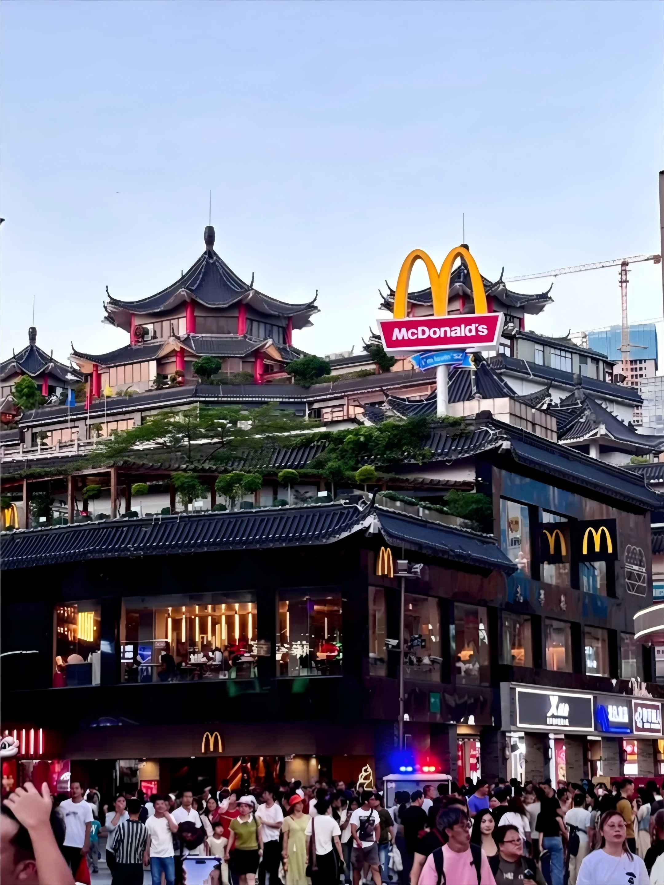
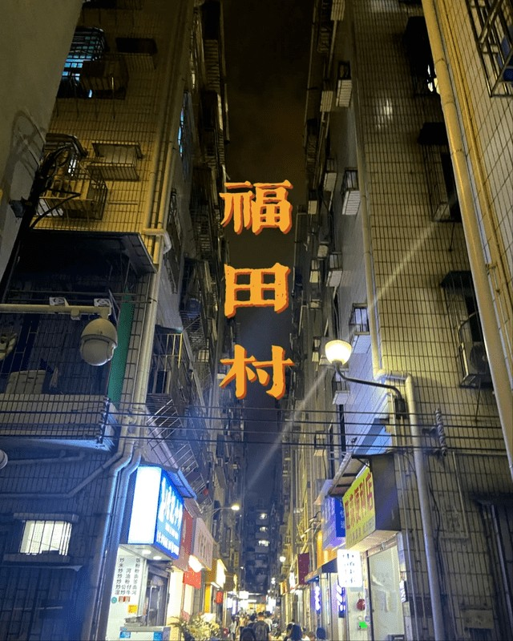
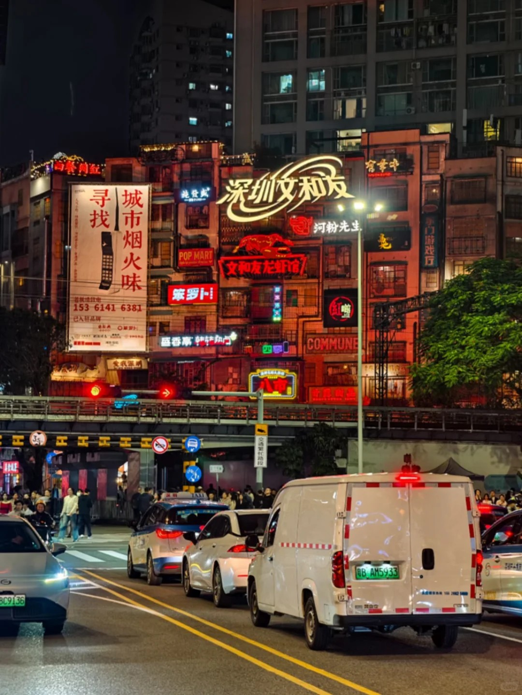
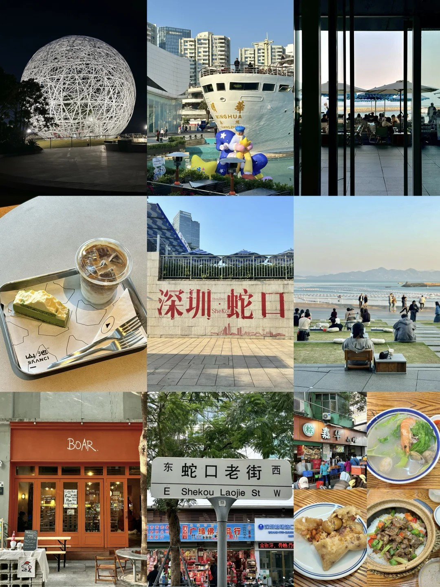

Beneath the towering skyscrapers of Shenzhen lies the heartbeat of the old streets. It is a place where time slows down, carrying the authentic taste of history, the warm laughter of neighbors, and the mesmerizing aroma of street food.
Wandering through these historic alleys feels like opening a time capsule. Here, the essence of the city is preserved—raw, beautiful, and deeply moving.
Unlock the hidden gems, traditional tea houses, and bustling night markets that form the cultural fabric of old Shenzhen.

One of the few urban villages in Shenzhen that still preserves Lingnan-style arcade buildings.

The oldest commercial street in Shenzhen. A century of history is hidden within its arcades and old shops.

A coastal old neighborhood where fishing boats anchor by the shore, and the sea breeze mixes with the fresh scent of seafood.